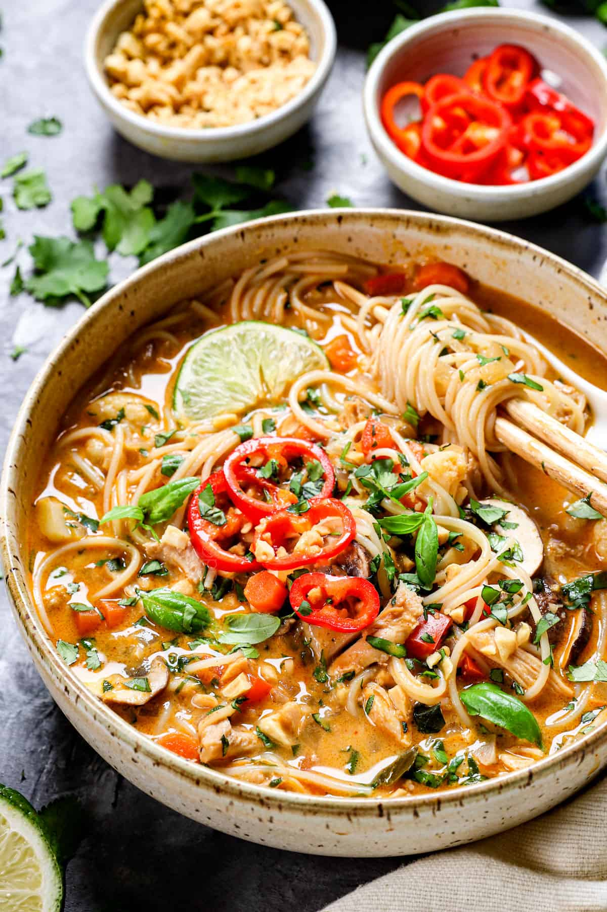

Home index page
Thai Chicken Noodle Soup

Description
This is a family favorite. Perfect for summer potlucks or to warm up during the fall and winter months. This recipe makes a large batch, so there is plenty for the whole family. The hearty chicken, spicy curry and creamy coconut milk come together to make this memorable soup. This can be made in a single pot making for less dishes and more spending time with those you care about.
Ingredients
- 2 T Olive oil
- 1 lb boneless chicken
- 1 diced onion
- 2 medium diced carrots
- 2-4 T red curry paste
- 1 T grated ginger
- 4 minced cloves of garlic
- 5 c low sodium chicken broth
- 2x 14oz. cans coconut milk
- 2 T low sodium soy sauce
- 2 T fish or hoisin sauce
- 2 T brown sugar
- 3 T minced basil
- 1 1/2 tsp salt
- 1/2 tsp pepper
- 1 c sliced mushrooms
- 1 diced red bell pepper
- 1 c cauliflower or brocolli florets
- 3oz vermicelli/thin rice noodles
- 1/4 c cilantro
- 2-3 T lime juice
Optional garnish includes: chopped peanuts, cilantro and/or limes
Steps
- Heat oil in a large soup pot. Add chicken and brown. Remove chicken and set aside.
- Add onion and carrots in with remaining oil in pot, until softened. Add curry paste, ginger and garlic and saute.
- Add chicken back to pot. Add broth, coconut milk, soy sauce, fish/hoisin sauce, basil, brown sugar, salt and pepper.
- Bring the pot to a boil, then reduce heat to medium-low. Simmer for approx. 15 mins until chicken shreds easily.
- Add mushrooms, bell peppers, cauliflower/brocolli, and rice noodles. Simmer 5 more minutes. Note: noodles will continue cooking after removed from heat. So its ok, if they appear undercooked.
- Stir in cilantro and lime juice. Optional peanuts or sriracha for those who like an added kick of spice.
- Enjoy!